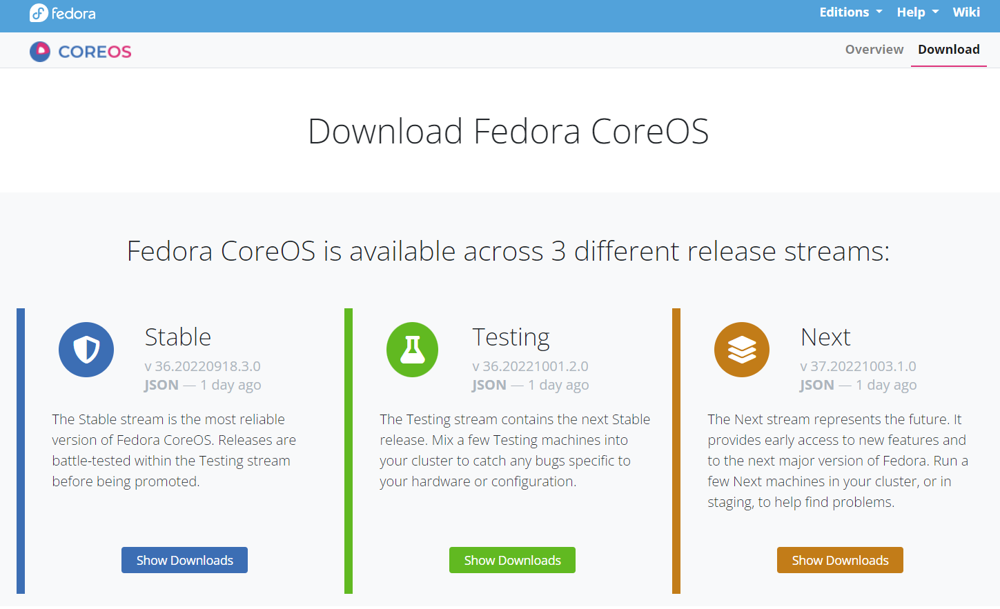
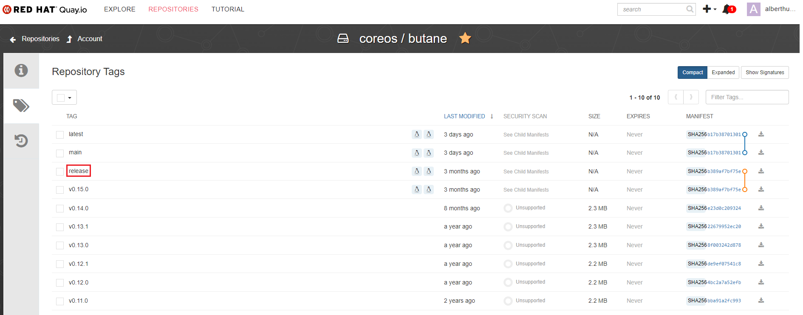
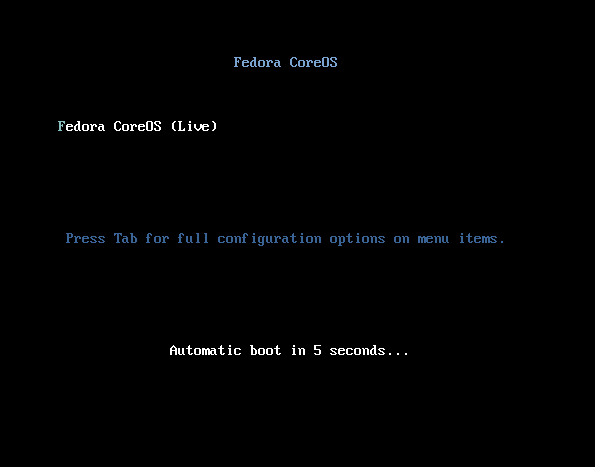
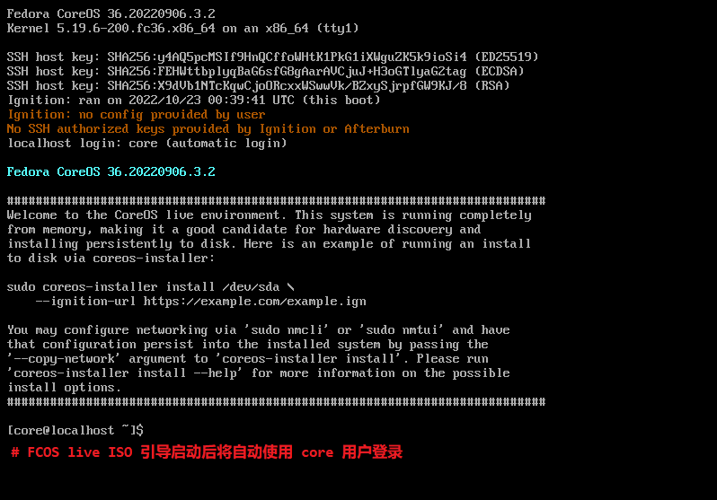
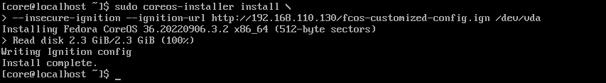

文档目录：
- 关键技术点
- Fedora CoreOS 及 RHCOS 介绍与特性
- Ignition 在 FCOS 或 RHCOS 中的工作特点
- Ignition 对 OpenShift 4 集群主机的处理顺序
- Fedora CoreOS 的安装环境与工具说明
- Fedora CoreOS 的定制化安装与验证
- 参考链接
关键技术点：
- 以下技术点在文中将根据 Fedora CoreOS 及 RHCOS 中展开说明：
- ignition, butane, ignition-validate
- ostree, rpm-tree,zincati, bootupd
Fedora CoreOS 及 RHCOS 介绍与特性：
- 在 OpenShift 4 安装过程会自动安装 CoreOS 的商业版 Red Hat Enterprise Linux CoreOS（简称
RHCOS）。根据 OpenShift 4 的文档说明，RHCOS 无法独立运行安装，它必须和 OpenShift 4 一起运行（因此 RHCOS 没有单独的订阅）。 - 😃 不过好在 CoreOS 还提供了可以独立运行的社区版
Fedora CoreOS（简称FCOS）可以完全免费使用。由于 FCOS 可以无需 OpenShift 4 也可以独立安装运行，因此使用 FCOS 作为研究环境，而相关操作基本都可适用 RHCOS 环境。 - FCOS/RHCOS 是 Red Hat 在收购 CoreOS 公司后结合
CoreOS Container Linux和Fedora Atomic Host的优点推出的新一代容器操作系统，其目标是提供最佳的容器主机，从而能安全、大规模地运行容器化的工作负载。 - FCOS/RHCOS 将 Ignition（点火） 与 rpm-ostree 等技术相集成，是一个自动更新的、最小的、整体的、对运行容器和 Kubernetes 进行了优化的操作系统，因为它们更符合 “不可变架构”（
Immutable Infrastructure）理念，因此成为 Red Hat 推荐的 OpenShift 4 底层操作系统。 - FCOS/RHCOS 的安装及配置过程和一般的 RHEL 稍有差别，需要通过 Ignition 配置文件在安装的时候初始化网络、存储、内核、用户等方面的配置。
- FCOS 的设计理念：
- 🐳 由于容器允许将工作负载重复部署到生产环境中，并自动扩展以满足需求。容器提供的隔离意味着主机操作系统可以很小，它只需要一个
Linux kernel、systemd、container runtime和一些附加服务（如 SSH 服务器）。 - FCOS 是专门为容器工作负载而设计的，无需定期维护，可以使用最新的操作系统改进、bug 修复和安全自动更新，其使用 Ignition 为自身提供服务，使用
Podman和Moby运行容器，并使用rpm-ostree自动进行原子更新。❗ 注意：
FCOS 支持
CRI-O作为容器引擎，常用于 OpenShift 4 的底层容器运行时，一般不直接使用 CRI-O 运行容器，OpenShift 4 可通过CRI接口创建与管理 Pod。可通过
crictl命令行工具创建与管理容器及 Pod，但一般情况下用于容器或 pod 的调试而非容器或 pod 的创建。
- 🐳 由于容器允许将工作负载重复部署到生产环境中，并自动扩展以满足需求。容器提供的隔离意味着主机操作系统可以很小，它只需要一个
- FCOS 调配不可变架构：
- 在系统首次引导（
first boot）阶段，FCOS 使用 Ignition 调配系统。 - Ignition 读取用户提供的数据或远程 URL 地址提供的 Ignition 配置文件，并且使用它创建磁盘分区、文件系统、用户、受信任的用户 SSH 公钥、文件与系统单元文件（systemd units）等。
- 调配主机的方式：
- 编辑基于 YAML 格式的
Fedora CoreOS Config（FCC）文件，该文件指定主机的期望配置，FCC 支持所有的 Ignition 功能，也提供额外的语法。 - 使用
Fedora CoreOS Config Transpiler (Butane)工具将 FCC 文件（.fcc）转换为 Ignition 配置文件（.ign）。 - 启动 FCOS 主机并将 Ignition 配置文件同步至主机中调配系统的安装。
💁♂️ 调配主机的方法：
使用 PXE 引导并与指定 Ignition 配置文件调配安装主机。
将 Ignition 配置文件同步至使用 FCOS live ISO 引导启动的主机中，再使用
coreos-installer工具调配安装主机（本文使用此方法）。
- 编辑基于 YAML 格式的
- FCOS 被设计为不可变架构。在主机被调配之后，不应该更改 /etc 目录或重新配置主机，相反，更改 FCC 文件并且使用该文件调配替换的主机。
- 🐳 这种方式与容器管理相似：容器镜像不可被原地更新，而是重头构建与重新部署。该方式在负载增加时容易横向扩容。只需简单地使用相同的 Ignition 配置文件来启动其他主机。
- 在系统首次引导（
- FCOS 发布版本：
testing stream：
当前 Fedora 发行版的常规快照，加上更新。- ❤
stable stream：
在测试版本可用两周后，它被发送到稳定流，在测试中发现的bug将在发布稳定流之前被修复。 next stream：
即将发布的 Fedora 版本的常规快照，允许有额外的时间测试较大的更改。
👉 每个 stream 每 2 周发布一次，更新内容会从一个 stream 推广到另一个 stream（next -> testing -> stable）。这样落地在 stable stream 中的更新就有机会经过长时间的测试。
👉 所有三个 stream 都收到了安全更新和关键的错误修复，并旨在安全地用于生产使用。大多数机器应该运行stable stream，因为它接受最多的测试。但是，用户应该在 next stream 上运行他们的部分节点，并向问题跟踪器报告问题。这有助于确保只影响特定工作负载或特定硬件的 bug 在稳定之前得到修复。
- RHCOS 的关键特性：
- 系统基于 RHEL 开发
- 可控制的不可变架构（
controlled immutability） - 默认使用
CRI-O容器运行时 - 可使用容器工具集管理容器或 Pod（包括
podman、skopeo与crictl等） - 🔥 使用
rpm-ostree实现事务性更新升级❗ 注意：
OSTree是一个用于对基于 Linux 的操作系统进行版本更新的系统，它可以被视为 “面向操作系统二进制文件的 git”，它被 endless OS、Flatpak、Fedora、CentOS、Atomic Host 和 GNOME 等项目用来持续交付，有关 OSTree 更多详细的说明可参考 libostree 官方文档。rpm-ostree 是一个混合镜像/包系统，以命令行与守护进程的方式运行，可将软件包以分层的形式构建在 OSTree 之上，将软件包作为系统的扩展，关于 rpm-ostree 更多详细的说明可参考 rpm-ostree 官方文档。
FCOS 中的
zincati服务（zincati.service）可检测系统的状态，通过rpm-ostreed守护进程进行更新，若其发现具有新的系统更新将自动更新系统，可将该服务关闭以禁用此功能。
- 🔥 针对
fireware与bootloader的bootupd更新器，bootupd 可以守护进程bootupd.service的方式运行。 - OpenShift 4 集群通过
Machine Config Operator (MCO)更新 RHCOS
Ignition 在 FCOS 或 RHCOS 中的工作特点：
- Ignition 是由 FCOS/RHCOS 使用的在系统初始化配置过程（
initramfs）中操纵磁盘的工具，其可完成常见的磁盘任务，包括磁盘分区、格式化分区、写文件与配置用户等。 - 在系统首次引导时（first boot），Ignition 读取安装介质或所指定的 Ignition 配置文件所在的路径。
- ✨ Ignition 的调配方式：
Ignition 配置文件（Ignition config file）或称点火配置文件 - Ignition 配置与
cloud-init或Linux Anaconda kickstart配置系统极其相似，但其具有自身的特点：- 由于 Ignition 能进行磁盘分区、设置文件系统与执行主机永久文件系统的其他改变，因此，在安装 FCOS/RHCOS 过程中 Ignition 运行于与系统相隔离的
initial RAM disk中。与之相对的，cloud-init 作为初始化系统的一部分不能容易地实现磁盘的分区。 - ✨ Ignition 与 cloud-init 对比：
- Ignition：
- 工作阶段：首次引导安装期间
- 工作次数：一次
- 功能实现：系统磁盘操作等
- 常用场景：安装部署
- cloud-init：
- 工作阶段：任意系统引导期间
- 工作次数：多次
- 功能实现：系统配置等
- 常用场景：系统配置
- Ignition：
- Ignition 用于初始化系统而不是更改已存在的系统，OpenShift 4 使用
Machine Config Operator完成所有主机的配置。 - Ignition 以声明式方式（declarative configuration）检查配置中的所有配置项目以满足指定的要求。
- ✨ 在 Ignition 完成主机配置后，kernel 保持运行但丢弃 initial RAM disk，并且转向（pivot to）磁盘上已安装的系统中。无需系统重启，所有的系统服务与其他特性即可启动。
- 由于 Ignition 通过声明式配置将主机调整为指定的状态，因此不能存在具有部分配置的主机，若在部署 OpenShift 4 集群时存在部分配置的主机，该主机将无法加入集群，需更换新的主机再次调配加入集群。
- 若存在问题的 Ignition 配置引起主机配置的失败，Ignition 将不再尝试使用相同的配置来调配另一台主机。
- 由于 Ignition 可使用完整的空磁盘，它能实现 cloud-init 无法完成的任务，如使用 PXE 引导从空磁盘调配裸机系统。
- 由于 Ignition 能进行磁盘分区、设置文件系统与执行主机永久文件系统的其他改变，因此，在安装 FCOS/RHCOS 过程中 Ignition 运行于与系统相隔离的
Ignition 对 OpenShift 4 集群主机的处理顺序：
- 在 OpenShift 4 集群中的 RHCOS 主机上 Ignition 的处理涉及以下步骤：
- 1️⃣ 控制平面主机（
control plane machines）从引导主机（bootstrap machine）获取 Ignition 配置文件，而工作主机（worker machines）从控制平面主机获取 Ignition 配置文件。 - 2️⃣ Ignition 在主机上创建磁盘分区、文件系统、目录与链接，它支持 RAID 阵列但不支持 LVM 逻辑卷。
- 3️⃣ Igition 在 initramfs 中挂载 root 持久化文件系统于
/sysroot目录并在/sysroot目录中工作。 - 4️⃣ Ignition 配置所有定义的文件系统并恰当地挂载它们。
- 5️⃣ Ignition 运行
systemd临时文件以填充在/var目录中的所需文件。 - 6️⃣ Ignition 运行其配置文件来配置用户、systemd 单元文件与其他配置文件。
- 7️⃣ Ignition 卸载在 initramfs 中挂载的持久化系统中的所有组件。
- 8️⃣ Ignition 启动新主机的初始化过程，启动系统引导阶段的所有其他的服务。
- 1️⃣ 控制平面主机（
- 处理结束后，主机已做好加入集群的准备并且无需重启，与前文所述相同。
Fedora CoreOS 的安装环境与工具说明：
- FCOS 支持在多种 IaaS 环境下运行。
- Fedora CoreOS live ISO 版本：fedora-coreos-36.20220906.3.2-live.x86_64.iso
- Butane 工具：
- linux 版本：0.15.0
- 该工具来源于 coreos/butane 项目
Butane以前称为 Fedora CoreOS 配置转换器（Fedora CoreOS Config Transpiler，FCCT），它可将 Butane 配置文件（Butane Config）或称 FCC 文件转换为 Ignition 配置文件（Ignition Config），该文件为JSON格式将被 FCOS 主机在首次引导调配时使用，可用于创建磁盘分区、文件系统、用户、受信任的用户 SSH 公钥、文件与系统单元文件（systemd units）等。- ✨ 其中 Butane 配置文件为
YAML格式，关于该文件不同版本的配置规范（configuration specifications）请参考该 链接。 - ✨ Butane 配置文件使用示例请参考该 Examples。
- 可在自己指定的节点（非 FCOS 主机）上安装 butane，安装方式包括 butane 容器镜像（
quay.io/coreos/butane:release）、rpm 软件包或独立的二进制文件（standalone binary），此处使用以上链接的独立二进制文件进行安装。 - butane 的使用方法可参考该 链接。
- ignition-validate 工具：
- linux 版本：2.14.0
- 该工具来源于 coreos/ignition 项目
- 该工具用于对 Ignition 配置文件的格式与合法性字段的验证，若语法不合规将无法在 FCOS 中使用
coreos-installer于系统首次引导时安装。
Fedora CoreOS 的定制化安装与验证：
准备 HTTP 服务器、Ignition 配置文件与相关配置文件（非 FCOS 节点）：
❗ 注意：
本文安装采用基于 KVM 虚拟机模拟裸金属安装环境。
关于
butane工具与ignition-validate工具的安装如前文所述。💁♂️ 本文使用 FCOS live ISO 的方式引导并使用其中的 coreos-installer 工具调配安装主机，若使用 PXE 方式引导安装请参阅官方文档。
1
2
3
4
5
6
7
8
9$ sudo yum install httpd
$ sudo systemctl enable --now httpd.service
# 安装与启动 httpd 服务并设置为开机自启
$ ssh-keygen -N '' -t rsa -f ~/.ssh/core_fcos_login
# 创建用于 SSH 免密登录 FCOS 的公私钥，此处将该 SSH 公钥拷贝至 Butane 配置文件
# 的 ssh_authorized_keys 字段中。
$ mkdir ~/fcos && cd ~/fcos
$ vim fcos-customized-config.yml
# 创建 Butane 配置文件该配置文件如下所示：
1
2
3
4
5
6
7
8
9
10
11
12
13
14
15
16
17
18
19
20
21
22
23
24
25
26
27
28
29
30
31
32
33
34
35
36
37
38
39
40
41
42
43
44
45
46
47
48
49
50
51# 该配置文件可参看前文 GitHub Butane 的 Examples 或 Fedora CoreOS 官方文档
# 的 Storage 部分进行编辑。
variant: fcos
version: 1.1.0
# 创建自定义用户、密码、home 家目录与配置 SSH 免密登录的公钥
passwd:
users:
- name: core
ssh_authorized_keys:
- ssh-rsa AAAAB3Nz...jnXfG+Uj godev@cloud-ctl.domain12.example.com
# 由于 FCOS/RHCOS 在安装完成后无法使用密码直接登录，该公钥用于 core 用户的
# SSH 免密登录。
- name: cloud-admin
password_hash: $y$j9T$j0ODWvNUDSXcEcwpDH141.$dvAEVxBHUWbW/NnPd90qkg0Haq6vgkcKF151jvLDgYA
# 明文密码 redhat 通过 hash 加密的密文
# 虽然该用户已配置密码，但无法通过 SSH 远程登录，该密码只允许本地控制台登录。
home_dir: /opt/cloud-admin
no_create_home: false
groups:
- wheel
shell: /bin/bash
# 注意：当任何用户 SSH 远程登录失效时，可用该用户本地登录并提权！
storage:
# 将本地指定目录中的文件内容注入 FCOS 的对应文件中，需使用 butane 工具的
# --files-dir 选项。
files:
- path: "/etc/NetworkManager/system-connections/Wired connection 1.nmconnection"
contents:
local: ./Wired_connection_1.nmconnection
mode: 0600
# FCOS 的网络接口配置
- path: /etc/hostname
contents:
local: ./hostname
mode: 0644
# FCOS 的主机名配置
# 将 FCOS 的 /dev/vdb 进行分区并挂载至 /var 目录，主要用于容器与镜像的存储。
# 注意：Ignition 不支持对 FCOS/RHCOS 的 LVM 逻辑卷功能！
disks:
- device: /dev/vdb
wipe_table: true
partitions:
- number: 1
label: var
filesystems:
- path: /var
device: /dev/disk/by-partlabel/var
format: xfs
wipe_filesystem: true
label: var
with_mount_unit: true以上 YAML 文件可点击 此处 获得。
1
2
3
4
5
6
7
8
9
10
11
12
13
14
15
16
17
18
19
20
21
22
23
24
25$ cat ./hostname
fcos36-cloud.lab.example.com
$ cat ./Wired_connection_1.nmconnection
[connection]
id=Wired connection 1
type=ethernet
autoconnect-priority=-999
interface-name=ens3
[ethernet]
[ipv4]
address1=192.168.110.13/24,192.168.110.1
dns=192.168.110.1;
method=manual
$ butane --files-dir . \
--pretty --strict \
--output fcos-customized-config.ign fcos-customized-config.yml
# 在当前目录中根据 Butane 配置文件转换为 Ignition 配置文件
$ ignition-validate fcos-customized-config.ign
# 验证 Ignition 配置文件语法的合法性，若无返回则验证通过，该文件可用于 FCOS 的安装。
$ sudo cp fcos-customized-config.ign /var/www/html/
# 拷贝该文件至 HTTP 服务器的根目录中用于 FCOS 中 coreos-installer 工具的下载
# 读取与系统安装。创建 FCOS 虚拟机并使用 FCOS live ISO 引导安装，如下所示：
👉core用户可sudo免密提权为 root 用户。
👉 使用core用户正常登录后，再使用ip -br a s命令查看主机的 IP 地址（一般可通过DHCP自动获取），若无与 HTTP 服务器通信的 IP 地址，将无法下载 Ignition 配置文件而安装失败，可通过如下命令临时配置加以生效：1
2$ sudo ip address add 192.168.110.13/24 dev ens3
# 需根据实际场景调整 IP 地址与对应的网络接口👉 使用 FCOS live ISO 自带的
coreos-installer工具根据 Ignition 配置文件安装部署，如下所示：
1
2
3
4
5
6
7
8$ sudo coreos-installer install \
--insecure-ignition \
--ignition-url http://192.168.110.130/fcos-customized-config.ign \
/dev/vda
# 下载 Ignition 配置文件并将根系统安装于 /dev/vda 中
# 此安装过程根据所配置的内容不同耗时也将不同（笔者环境中安装较快）
$ sudo reboot
# 重启系统登录 FCOS 验证安装状态：
1
2
3
4
5
6
7
8
9
10
11
12
13
14
15
16
17
18
19
20
21
22
23
24
25
26
27$ ssh -i ~/.ssh/core_fcos_login core@fcos36-cloud
Fedora CoreOS 36.20221001.3.0
Tracker: https://github.com/coreos/fedora-coreos-tracker
Discuss: https://discussion.fedoraproject.org/tag/coreos
Last login: Mon Oct 24 14:07:00 2022 from 192.168.110.130
[core@fcos36-cloud ~]$ sudo -i
[root@fcos36-cloud ~]# id cloud-admin
uid=1001(cloud-admin) gid=1001(cloud-admin) groups=1001(cloud-admin),10(wheel)
[root@fcos36-cloud ~]# su - cloud-admin
[cloud-admin@fcos36-cloud ~]$ sudo -i
[sudo] password for cloud-admin:
[root@fcos36-cloud ~]# lsblk --paths
NAME MAJ:MIN RM SIZE RO TYPE MOUNTPOINTS
/dev/sr0 11:0 1 1024M 0 rom
/dev/vda 252:0 0 10G 0 disk
|-/dev/vda1 252:1 0 1M 0 part
|-/dev/vda2 252:2 0 127M 0 part
|-/dev/vda3 252:3 0 384M 0 part /boot
`-/dev/vda4 252:4 0 9.5G 0 part /sysroot/ostree/deploy/fedora-coreos/var
/usr
/etc
/
/sysroot
/dev/vdb 252:16 0 10G 0 disk
`-/dev/vdb1 252:17 0 10G 0 part /var
# Ignition 配置文件中的配置在 FCOS 中已生效由于 FCOS 中使用
rpm-ostree进行软件包的管理，若需安装额外的软件包，可使用如下方式：1
2
3
4
5$ sudo rpm-ostree install \
podman skopeo buildah cri-o cri-tools vim-enhanced
# 安装容器与镜像管理工具
$ sudo systemctl status crio.service
# 查看 CRI-O 守护进程状态，可通过 crictl 命令测试管理容器。
参考链接：
- Introducing Fedora CoreOS
- Getting started with Fedora CoreOS
- Fedora CoreOS 入门 | Linux 中国
- ❤ Fedora CoreOS Documentation
- Red Hat Enterprise Linux CoreOS (RHCOS)
- ❤ How to customize Fedora CoreOS for dedicated workloads with OSTree